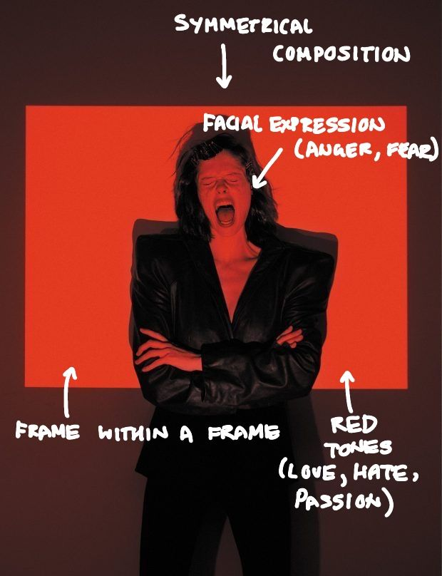

RESEARCH INSPIRATION: CONSUMPTION
WHAT ARE THE CONVENTIONS OF THE SURREALIST GENRE?
Projector photography, in the portrait genre, is a creative and innovative approach to capturing diverse images of individuals. This technique involves projecting images, patterns, or textures onto the subject or background during the photoshoot. It adds depth, interest, and a unique visual element to traditional portrait photography. Projector photography has been explored by media creators in recent years following an influx of expressionist artists. What I find compelling about this genre is the way that each photograph is unique in its own way; new elements of contemporary display are shown in each frame, and it strongly engages me and my interests, specifically in relation to the themes that I am hoping to explore.
Photographer: Julian Cinemetics
(https://www.pinterest.com.au/pin/880313058402292427/, Date Published: unknown, Date accessed: 22.3.24)
Incorporating dual tones into projector photography provides an engaging depth to the visuals, capturing viewers with its distinct blend of light and colour. By projecting opposing tones onto the subject or backdrop at the same time, it provides a visually appealing interplay that adds depth and complexity to the picture. This technique not only improves the aesthetic appeal, but it also draws viewers' interest and invites them to interpret the colour juxtaposition, resulting in a deeper engagement with the imagery. The dynamic interaction of the dual tones gives the picture mystery and invites viewers to continue looking and to investigate the complex layers of meaning hidden in the visual story. Thus, using dual tones in projector photography enhances the effect of the photoshoot, producing a lasting impact.

Photographer: Coco Rocha
(https://www.pinterest.com.au/pin/880313058402292928/, Date published: 13.12.24, Date accessed: 22.3.24)
Facial expressions enhances audience engagement by adding narrative depth and emotional resonance to the visual. Expression creates layers of atmosphere and story on the photograph's display. From subtle nuances to dramatic gestures, face expressions capture the core of the human experience, generating empathy and connection from viewers. The interaction of projected imagery and expressive expressions generates aesthetics, encouraging viewers to immerse themselves in the scene and interpret its meaning on a personal level.
Colour usage in a photograph is a powerful tool for captivating audiences and creating emotional responses. Colours have a capacity to convey emotion, reinforce storylines, and provide visual intrigue. Colour selection and manipulation enhances storytelling and draws viewers into the photographer's wanted narrative. Bold contrasts or harmonising palettes can create visual focus points, directing the viewer's attention and improving the composition. Additionally, certain colours can emphasise certain emotions. This will be essential to the development of meaning
Using high contrast in a projector photography photoshoot can captivate audience members by increasing the visual impact of the images. The striking contrast between light and dark heightens the dramatic elements of the images, capturing viewers' attention and evoking intense emotional responses. The deep shadows and bright highlights create a dynamic interaction of light, providing depth and character to the compositions. This increased contrast not only enhances the visual appeal, but it also highlights subtle details and textures, pulling viewers deeper into the story of each image. By using extreme contrast, I can captivate audiences.